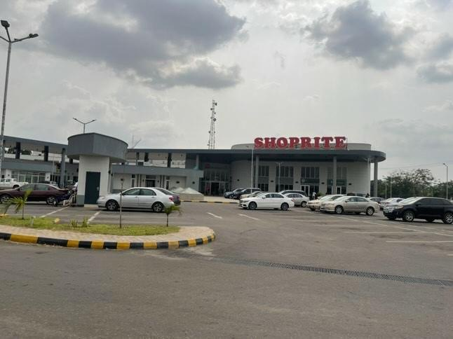

Ideas · Essay 1 of 5
Building Sustainability In, Not Adding It Later
What working with existing buildings has taught me about decisions made long before the facilities team arrives

Working in facilities management has changed the way I think about buildings.
When a building is handed over to the team responsible for running it, a great deal has already been decided. Its orientation is fixed, materials have been selected, cooling and water systems are installed, and lighting has been specified.
In many cases, the decisions that will influence how much energy the building consumes and how expensive it is to operate were made years before the facilities team became involved.
Of course, there is still a lot that can be improved during operation. Equipment can be managed differently, maintenance practices can change, inefficient lighting can be replaced, and energy consumption can be monitored more closely.
I have seen the value of those interventions firsthand but I have also started asking a different question.
What if some of the problems we spend time correcting later could have been avoided by making better decisions earlier?
A lesson from Benin City Mall
That question became more important to me in 2025 while I was working with Knight Frank Nigeria.
At Benin City Mall, I took the initiative to investigate persistent operating losses. I wanted to understand where the building was using more electricity than it needed as energy costs were putting pressure on the property and its tenants.
The review pointed to two significant areas: cooling and lighting.
Air-conditioning systems were operating overnight in parts of the mall with little or no activity, while older lighting fixtures were consuming more electricity than necessary. Together, these accounted for 62% of the energy waste identified in our assessment.
We adjusted how the cooling systems were operated and replaced inefficient lighting. Within six months, energy consumption had fallen by 27%.
That result mattered but what stayed with me was the larger lesson behind it.
We had found ways to make an existing building perform better. Yet we were still working within the boundaries of decisions that had already been made.
We could change when an air-conditioning system operated or replace a light fitting but there are other decisions that become much harder and sometimes much more expensive, to change once a building is complete.
That is where my interest in sustainability began to move beyond facilities management.
Some problems are easier to prevent than correct
Consider cooling.
If a building is designed in a way that increases heat gain, the consequence may be greater reliance on mechanical cooling throughout its life. The facilities team can operate that system more efficiently but it cannot easily change the building's orientation.
The same applies to water. If water efficiency is overlooked when systems and fixtures are selected, future operators inherit the consequences.
Materials matter too. What looks like an attractive decision during construction may create different maintenance, replacement or environmental costs over time.
These issues made me realise that building performance is not simply an operational concern. It is shaped throughout the development process.
Nigeria's growing green-building market reflects a similar idea. The International Finance Corporation's Nigeria EDGE Green Buildings Market Transformation Program has focused on reducing energy and water consumption, as well as the energy embodied in construction materials. The programme links those improvements not only to a lower-carbon development path but also to lower utility bills and operating costs. disclosures.ifc.org, disclosures.ifc.org
That combination is important to me because the case for sustainability becomes much more practical when environmental performance and commercial performance are considered together.
Sustainability also has to make financial sense
Property owners, developers and investors do not make decisions in a vacuum.
Capital is limited, returns matter, occupancy matters, maintenance costs matter, so do financing conditions and long-term asset performance.
I don't believe sustainability should ignore those realities.
My experience at Benin City Mall taught me that an environmental improvement can become easier to implement when the people making the decision can also understand the economics behind it.
The conversation changes when we can move from:
This will use less energy.
to:
This will use less energy, this is what it will cost, this is what it could save and this is how long the investment could take to pay for itself.
That does not mean every environmental decision needs to produce an immediate financial return. Many important questions, particularly those involving resilience, climate risk and social impact are more complicated than a simple payback calculation.
But where environmental and financial value can reinforce each other, we should be able to demonstrate it.
There are signs that this thinking is gaining ground in Nigeria. In 2025, Green Building Council Nigeria and Sintali announced a partnership aimed at expanding adoption of EDGE, including awareness, capacity building and practical support for developers and professionals. von.gov.ng
The opportunity is therefore not purely theoretical.
What should we build differently?
Nigeria and other African markets will continue to need homes, offices, retail spaces, schools, hospitals and infrastructure.
Every new project creates decisions that may remain with the asset for decades.
How much energy will the building require?
How much water?
How will it respond to hotter conditions or heavier rainfall?
How expensive will it be to operate?
What will occupants inherit from decisions they had no part in making?
Those questions should not begin after the keys have been handed to the facilities team.
Existing buildings will always require good management. They will need maintenance, retrofits, monitoring and continuous improvement. My own professional experience has shown me how much value those interventions can create but it has also made me more interested in what comes before them.
When I encounter an inefficient system now, I try to ask two questions:
How can we improve this?
And then:
What could have been done earlier so that we did not inherit this problem in the first place?
That second question is increasingly shaping the direction I want my work to take.
I still care about making existing buildings perform better but over time, I want to contribute earlier, while the decisions that determine environmental and financial performance can still be shaped.
Sometimes the best retrofit may be the one we never need to make.